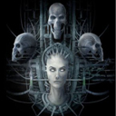

Forums galactiques > Assemblée Galactique : diplomatie officielle > Ignorants ... VOUS l'avez créée
Pages : 1
| Cassini Respect diplomatique : 29  28/02 ETU 21:08 | Score : 29 Détails « Il est revenu, Il est l'Alpha et l'Oméga.
Il est revenu, Il est l'Alpha et l'Oméga. » Inlassablement cet étrange être, d'une beauté mortelle, répéta ces mots. Le silence se fit à l'Assemblée. Que voulait-elle ? Qui était-elle ? Ces deux questions résonnèrent dans la tête des différents commandants présents ce jour-ci à l'Assemblée. Quelques secondes passèrent, ces mots sortaient de sa bouche en continu, sur un ton particulièrement neutre, détaché ... Puis elle stoppa ce qu'on aurait pu prendre pour un délire. Lorsque le silence se fit omniprésent, l'ambiance lourde, elle prit la parole et s'adressa à l'Assemblée. « Il est revenu, Il est l'Alpha et l'Oméga. Le Commencement et La Fin. Commandantes, Commandants, Autres ... Je suis Cassini, être ou non être. Le temps n'est que futilité, la vie, la mort ... la mort, la vie. Je suis Passé, Présent, Futur ... C'est un tout, une continuité, la Mort comme la Vie sont des fatalités auxquelles vous devez vous y résoudre. Vous êtes esclaves de votre vie, nul n'est éternel et un jour, la faux de la Mort viendra vous faucher. Votre hérésie a brisé les Protecteurs, le septième vient de tomber ... » Cassini sembla entrer dans une sorte de transe, ce n'est plus la même Cassini qu'il y a quelques instants. Sa tête, qu'est-ce qui lui arrive ? « Pauvre fou, savez-vous ce que vous avez fait ? Pourquoi avoir tant délivré de haine sur vos terres ? Pourquoi ... La Musique, déjà, ils ne perdent pas de temps ... 1, 2, 3 ... Oui les 7 sont là. Attendez la musique des cors, les 7, écoutez ... Ils chantent. Il est déjà trop tard. » Au loin, comme une rumeur qui court, qui se propage, une musique ... La musique, presque imperceptible parcourent la Galaxie. De planètes en planètes, d'étoiles en étoiles, ce son cavale ... « Cette voix sortant de nulle part ... ho non ... non ne donne pas ton ordre, ne les libère pas, je t'en supplie. Ils n'ont pas compris ce qu'ils faisaient. Ils ne savent pas, ce ne sont que de pauvres ignorants. Trop tard ... le sixième a exécuté sa peine ... » La Peur et le Désespoir pouvait se lire sur son visage ... que savait-elle ? « Fuir, se protéger ... à quoi bon maintenant. La Bête est lâchée, accompagnée de ses servants ... Guerre, Famine, Mort. Voilà votre nouvelle vie qui commence, un nouveau cycle. Voici ce que vous avez engendré. Blanc, Rouge, Noir, Vert ... retenez ces couleurs car vous allez Les rencontrer. » Elle devenait livide, pâle à en faire peur. « Les Monstres sont lâchés, ils vont déchaîner leur haine, ils tueront ... Leurs anges vont cueillir vos peuples ... Suivez le chemin de la Rédemption, la Mort n'est qu'une continuité ... Car cette fois Il rénove tout. Il est revenu, Il est l'Oméga et l'Alpha. La Fin et le Commencement. » Elle vieillissait à vu d'oeil, les joues se creusent, les cheveux blanchissent ... « Le septième jouera son oeuvre au moment opportun. Vous affronterez alors votre Jugement ... Le Dernier ... Espérance a été, est et sera ... » L'être s'arrêta, au cours de sa mise en garde, on pu voir une autre Cassini, elle avait changé comme si d'Autres étaient en elle, comme si elle pouvait voir à travers les personnes, à travers les âges ... Elle s'évanouit ... Des sons, des bruits résonnaient encore sur Ambassade ... Une musique, macabre, persistante ... Cassini n'est plus et est encore. Son corps git au sol au milieu de l'Assemblée, desséchée, flétrie par les aléas du Temps ... |
Pages : 1
Forums galactiques > Assemblée Galactique : diplomatie officielle > Ignorants ... VOUS l'avez créée